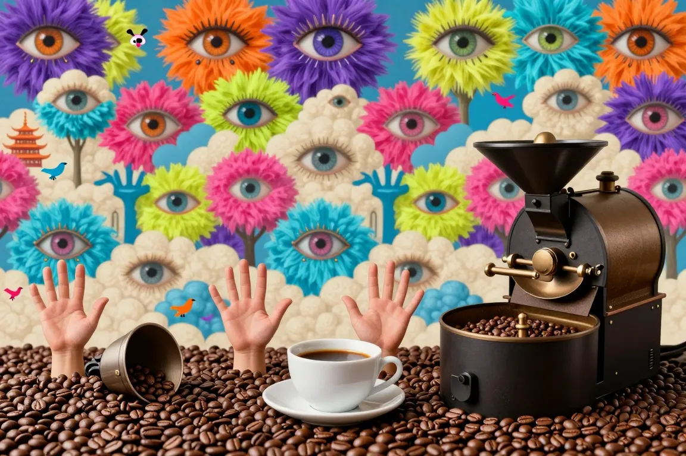

internet · 2015–2017 · also: DeepDream, Inceptionism, Puppy-slug dreams
Photographs that a neural network fills with eyes, dog faces, pagodas and swirled fur at every scale. It started in 2015 when Google released the code that made the effect.

Core thesis
A machine that looks for patterns finds them in everything: the picture shows what the network expects to see, and it shows it everywhere.
Design principles
Fill the frame with repeated motifs: eyes, snouts, feathers and arches at 3 to 5 sizes, from 8px to 200px.
Run 4 to 8 octaves of the effect, so that small motifs sit inside large ones.
Set saturation at 130% to 180% and push the hue toward orange, lime and magenta over a dark ground (#14102A).
Bend lines into spirals and wave fields; keep no straight edge longer than 10% of the frame.
Keep one readable photographic base, such as a landscape or a face, at about 30% visibility under the motifs.
Place a plain 16px mono caption bar at the foot of the frame with the layer name, for example inception_4c.
Loop the zoom at 12 fps: scale the image 1.03x for each frame and feed it back to the network.